You can trigger Automations from various sources, including cloud services, email, file directories, or webhooks.
After completing this lesson, you’ll be able to:
Fatima is a colleague of Jennifer and Frank. She is a Business Data Analyst at the city’s Business License Office.
Fatima tells Frank that she would like to receive an email with an Excel report of all the food vendors once a month. Frank offers to use FME Flow Automations to create that workflow for her.
Automations takes data integration to the next level. Designing your FME workspaces with this in mind lets you create reusable, modular, and integrated applications for your organization, rather than one-off, single-use workspaces for every workflow. Automations support automated schedules and event-driven workflows that can:
Automations let you implement the enterprise integration patterns popularized by Gregor Hohpe and Bobby Woolf: repeatable solutions to commonly occurring problems encountered when integrating applications or systems.
Frank needs to create a new Automation to run his self-serve workspace once a month and send the results as an Excel file to Fatima.
He logs into FME Flow (2024.0 or later) and clicks Automations > Build Automation in the web interface menu on the left side of the window.
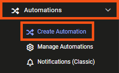
Because he has built Automations before, he clicks Close when the Get Started window appears.
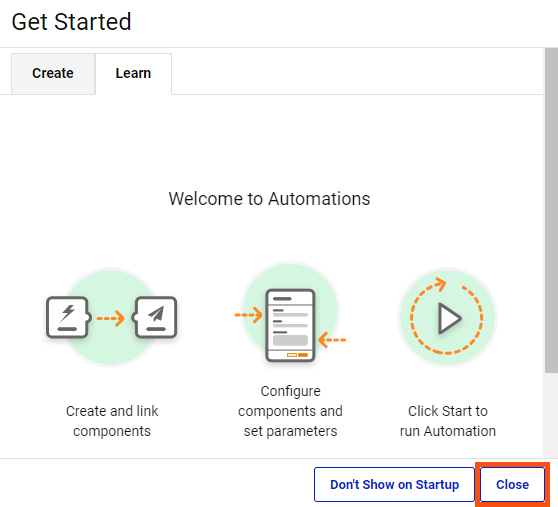
Frank knows all Automations are composed of three objects:
A green Trigger is already on the canvas. He clicks the lightning bolt icon on the Trigger to open the Trigger Details pane.
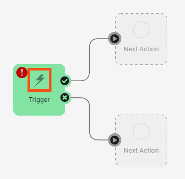
He clicks the Trigger drop-down and scrolls down to select FME Flow Schedule (initiated).
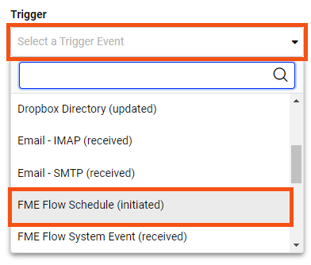
You can trigger Automations from various sources, including cloud services, email, file directories, or webhooks.
Frank notes that FME Flow Schedules use the time zone where FME Flow is installed. He keeps the default Schedule Type of "Basic" and scrolls down to set the Start date as the last day of the current month. Once that is set, he can set Recurrence to "Last day of every month."
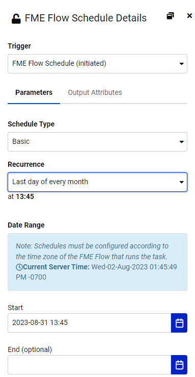
If you don't see the Recurrence option for "Last day of every month," ensure you have selected the last day of a month for Start in the FME Flow Schedule Details pane. Otherwise, that option will not be available.
He clicks Apply, and the Trigger changes to a Schedule to show it’s been set.
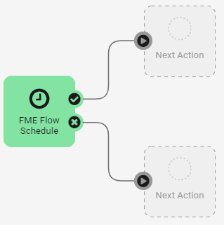
Then he clicks Menu > Save As.
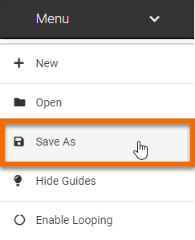
He names the Automation “Monthly Food Vendor Update” and clicks OK.
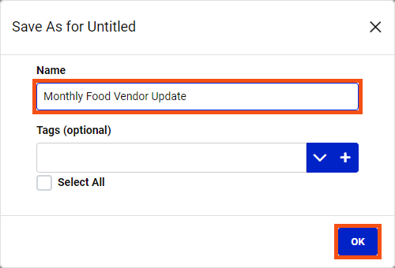
Now that he’s set a Trigger, he needs to add an Action that will occur when the trigger is activated.
He clicks the empty circle icon above Next Action to open the Next Action Details pane. Then, he selects Run a Workspace from the drop-down options.
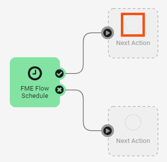
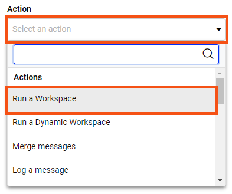
Other Actions include:
- Merge messages lets you combine the results of previous actions, such as the results from two separate workspaces.
- Filter messages lets you conduct tests from previous triggers or actions to control how your Automation runs. It’s like a Tester transformer for Automations.
- Log a message lets you add to the Automations logs for workflow reporting and debugging.
He will set the Automation to run the self-serve workspace. He clicks Repository and chooses Self-Serve, then for Workspace, chooses CommunityMapping.fmw.
Next, he fills in the Parameters, choosing "Excel" for the Output Format and "FoodVendors" from the Feature Types to Read. With the Parameters filled in, he clicks Apply.
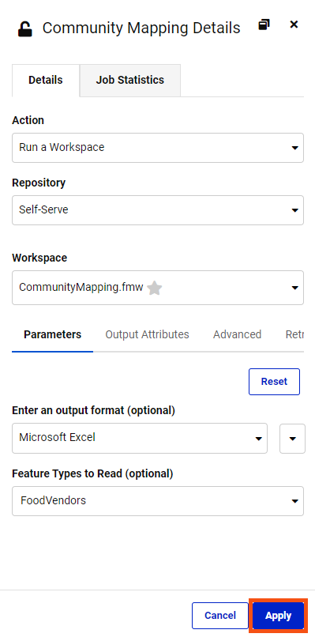
After clicking Apply, two new options appear on the canvas: a Next Action option for each CommunityMapping Action port. The ✔ (Action Succeeded) port action will occur if the workspace runs successfully, and the X (Action Failed) port action will occur if the workspace fails. These branching options let you create robust Automations that account for failure.
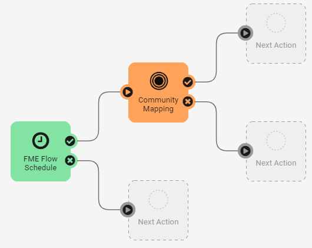
Frank clicks the Next Action option from the success port at the top and chooses Email (send) for the Action. He fills in the email account information for his company Gmail address using the Gmail template provided via Load Template.
If you use Gmail or other email services requiring two-factor authentication, you must create an app password to allow FME Flow access to your account. Use this instead of your regular password. For Gmail, see this tutorial. If you don't want to set that up, just read along or use the Log a message Action instead.
For the Email To parameter, he types in Fatima’s email address; for Email From, he enters his. For the Email Subject, he enters “Monthly Food Vendor Report.” For Emailthe Body, he enters:
“Hello, Fatima,
I've attached the most up-to-date Food Vendor data.
Best, Frank”
Finally, he needs to attach the data created by the workspace. For the Attachment, he enters the same path used for Output Location when the workspace runs, “$(FME_SHAREDRESOURCE_DATA)/CommunityMapping.zip.”
To test the email server connection, he clicks Validate. After a moment, an alert reporting the connection is Valid appears at the top of the pane. Seeing that it works, he clicks Apply.
His Automation is complete! He clicks the icon in the toolbar to save his Automation.
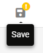
Then he clicks Start in the top-right corner of the window.
⭐New for FME 2023.2: there is now also a Debug button next to the Start button. This new button introduces two different ways of running Automations:
- Start (recommended): This mode writes automation log files to the Logs > Automations folder in Resources, which are saved according to System Cleanup settings (see Configuring how long to keep Start mode Automation logs).
- Debug: This mode writes automation log files to the FME Flow Database. Debug logs are cleared each time the automation restarts, regardless of mode. This mode is not recommended for running automations in a production environment.
The Automation starts. To test it (as it won’t run for a while), he double-clicks the Schedule trigger to open its parameters. There is a new button: Trigger. This button is available once an Automation is running and lets you test it by immediately running it once. He clicks Trigger to run the Automation once right now.
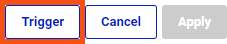
Fatima tells Frank she received an email: it worked. Thanks to FME, there is now one less manual task for Fatima to do!
This Automation is very tailored to Fatima’s workflow. Frank could improve it if Fatima’s needs change. For example, he could create a user parameter that controls if all the data is written (the current behavior) or just the data updated in the last month. He could also create a User Key to pass the output location path to the Email action instead of manually entering it in two places. He could even start building the FME Automations writer directly into his workspaces, creating modular pieces that fit into enterprise integration patterns.
Create an Automation like Frank’s.
If you wish, you can use your own email account for the Email (send) External Action, using one of the provided templates if appropriate. Instead of sending the report to Fatima, send an email to an account you monitor.
If you don't want to setup the email action, you can use the Log a message Action instead. Use Menu > View Log Files > action_fmelogaction.log from the page with your running Automation to test if it's working.